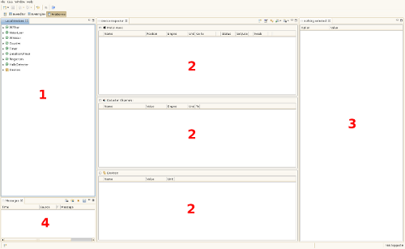

The EveDevice perspective contains four views. Three which interact with each other and one showing different kinds of messages. The image below shows an overview of the EveDevice perspective.

Devices present in the current device definition which are shown in the Local Devices view (1) can be added to the Device Inspector (2) for monitoring and/or manipulation. Additional properties, i.e. options, are available in the Options View (3). Warnings and notifications of wrong inputs are shown in the Messages View (4).